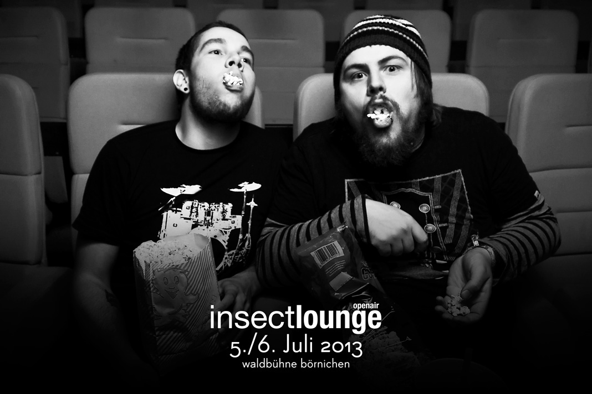

Line Up
Auch 2013 lädt die insect-Familie zum gemeinsamen Musik-erleben ein und besticht wieder durch ein
sorgfältig ausgewähltes LineUp.
Auf 2 Tage verteilt werden insgesamt 11 Bands und 2 DJs für die musikalische Atmosphäre sorgen
und den Park erneut zum Klassentreffen der Insekten machen.
!!! EINTRITT FREI !!!
Freitag 5.Juli 2013
Beginn: 18.00 Uhr

rocking chair
Rocking Chair – rustikal, doch innovativ. Wenn Zeitlosigkeit mit modernen Aspekten der vielfältigen Musikwelt kombiniert wird. Schnelle Rhythmen, saftige Gitarren-Riffs, warme Bassläufe, krachende Drums und sanfte Harmonien haben die Jungs aus Flöha in ihrer 3er-Kombo zusammengeführt. Neue Stücke werden bereits auf dem insectlounge OpenAir gespielt.

thrashure

thanks and get ready

begbie
Zwischen Melancholie und provinzieller Gelassenheit, entführen uns die drei Magdeburger Jungs von Begbie in die poppige Weite der schönen Harmonien. Selbst bezeichnen Sie Ihre Stücke als Heartdisco Music. Und wahrlich das ist Sie, Disco fürs Herz die immer wieder für eine Überraschung gut ist
Samstag 6.Juli 2013
Beginn: 14.00 Uhr
enormis
Elementargewalten, steiniges Terrain, heroische Gewitter, dichter Nebel, peitschende Stürme, Facetten eines endlosen Horizonts - Für diese und andere Eindrücke und Emotionen stehen die Themen der Band ENORMIS. Mit sphärischen Riffs und treibendem Drumbeats erschaffen die vier Klangmacher mitreißende Instrumental-Songs, die es faustdick hinter den Ohren haben.
no soap radio
No Soap Radio. Das ist kompromissloser Gitarrenrock, der seine Direktheit und Kraft aus den verschiedensten Genres gewinnt. Von Psychedelic über Progressive Rock bis hin zu Stoner, Punk und Metal machen sich Einflüsse bemerkbar, die mal mehr und mal weniger Gewicht haben. Das im Mai 2012 erschienene Debütalbum ‚Sweet Chimera‘ ist von dieser Vielfalt geprägt.

claim
Die langjährigen Oederaner Locals gehören zum Inventar des iloa und scheinen jeglicher Veränderung zu trotzen. Mit eiserner Diziplin schmieden sie seit vielen Jahren an ihren Songs und wer sich 9 Jahre Zeit lässt, um dann wieder nur eine EP auf den Markt zu schmeißen,muss sich seiner Sache sehr sicher sein. Claim sind sich sicher und wagen nach 14 Jahren Bandgeschichte den nächsten Schritt. Der Name der neuen EP bringt es auf den Punkt: Constant.
suralin
Als Kinder haben wir mit Suralin noch unsere eigenen Fantasien in Form gebracht. Spannend den Moment abgewartet bis sich das Gebilde im Backofen für ewig verfestigt. So auch verfestigen die Jungs aus Chemnitz die bunte Menge von Noiserock, Post-Punk und Pop zu einem treibenden Sound der einen einfach mitreist.
dÿse
»Dÿse müssen Ihren Auftritt zu Ihrem Bedauern aus gesundheitlichen Gründen für dieses Jahr leider absagen. Wir wünschen dir gute Besserung Jari.«
TOKAMAK REAKTOR
TOKAMAK REAKTOR is a drum and bass duo, using drums, bassguitar, voice and samplers to bring you a very powerful electro-acoustic sound.
They combine Drum'n'Bass, Jungle, Techno,...with Funk, Rock, Hip Hop, ...and they are always open for a new experience. Both musicians were playing in many different projects, various instruments and several styles of music, before they come up with their own style of disco music.
It's a fact, that people come to a TOKAMAK REAKTOR concert, to dance.
special guests
langsame runde
max rademan
Seit mehreren Jahren bereits, entlockt Max Rademann - ein musischer Nachkomme Anton Günthers - seiner einst in Klingenthal gefertigten Vermona-Orgel ET 6 – 2 die wundersamsten Klänge. Ganz so als sei Stevie Wonder ein Kind des Erzgebirges, schmettert er sein Liedgut in den Äther, während die Orgel dazu ekstatisch wimmert. Die zunächst als musikalische Untermalung für Besucher diverser Schaubergwerke geplante Supermusicshow erobert nun zunehmend die Bühnen der gesamten Republik. Funky. Authentisch. Außergewöhnlich. Da schlägt das Herz schon auch mal im Siebenachtel Takt. Olé!